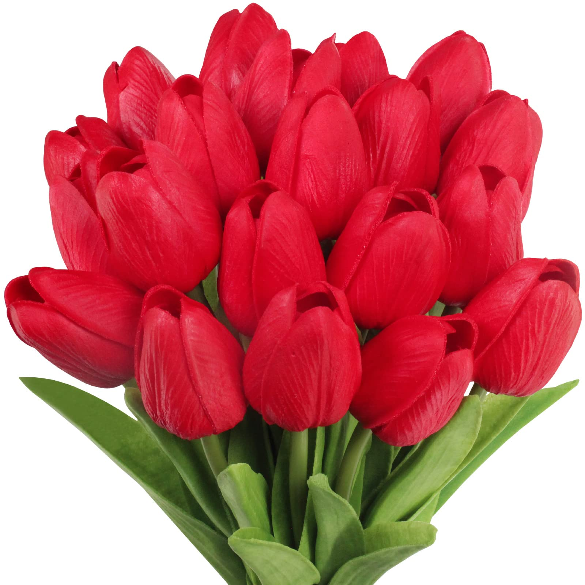
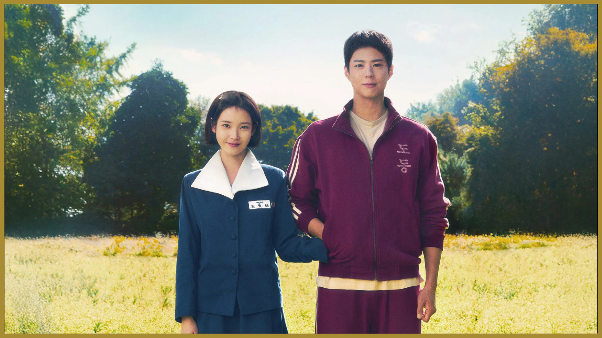
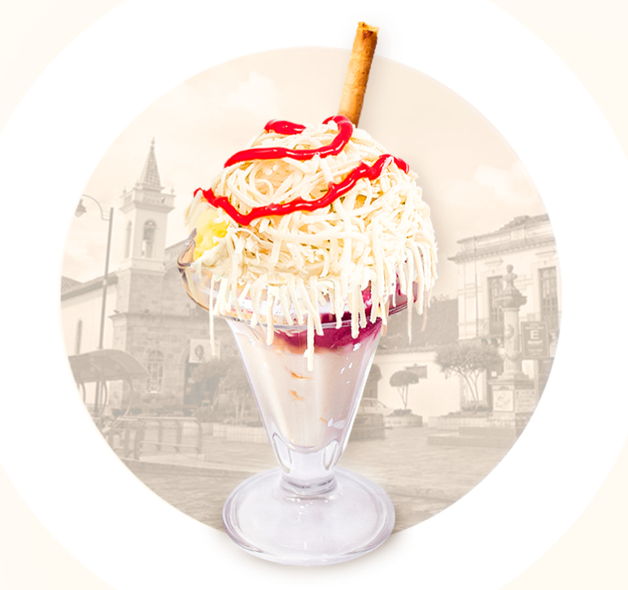
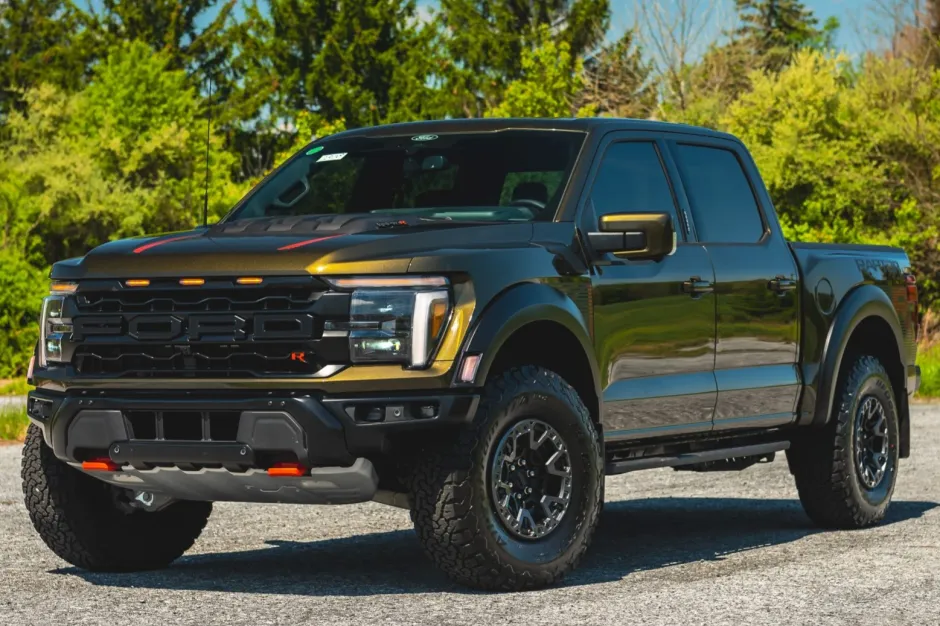
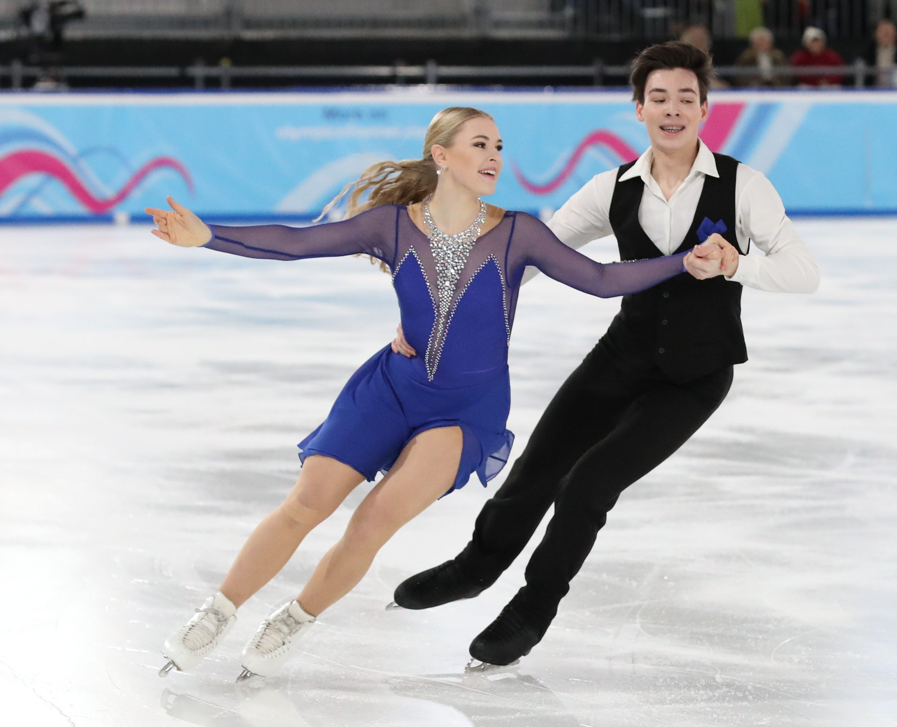
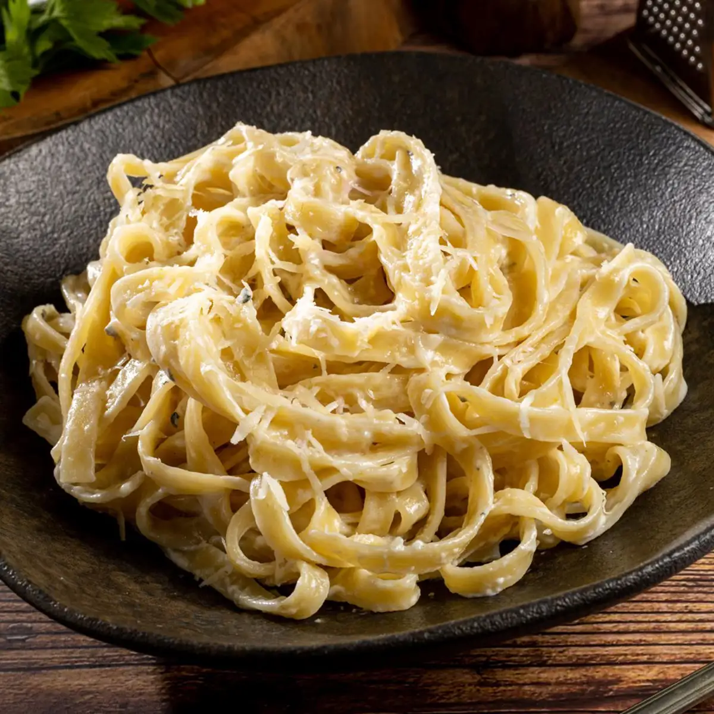

Lana del rey
La mejor cantante que he escuchado gracias a ti linda

Me encanta su musica aunque no sepa mucho ingles jsjs y por ti yo mejore bastante en la guitarra aprendiendo sus canciones para que las puedas disfrutar
La mejor cantante que he escuchado gracias a ti linda
Me encanta su musica aunque no sepa mucho ingles jsjs y por ti yo mejore bastante en la guitarra aprendiendo sus canciones para que las puedas disfrutar
Combinan mucho contigo y tu lindura

Me inspiran alegria asi como cuando estoy conversando contigo me siento feliz
Este kdrama se lo mucho que te gusto y a mi me dio enseñansas de la vida y tambien me hizo sacar lagrimas 😣

Siento que al ver este kdrama me hizo entender muchas cosas la cual quiero mejorar para poder ser un buen chico para ti princesa
Unos de mis helados favoritos tambien que me gustaria disfrutar contigo

Ya me dio hasta hambre jsjs aparte de el helado bogati tambien te gusta el de vainilla que son un buen sabor
Un carro bellisimo que me impresiono y el que tu deseas mucho tener linda

Increible me encanta el diseño y todo del carro el cual yo se que lo conseguiras princesa con tu dedicacion y yo te apoyare
De la mejores peliculas que he visto porque va mas aya del fisico donde se aprende a querer desde el alma
Hermosa toda la pelicula y no se queda atras que tambien se unen la bella y la bestia, el libro de la vida y valiente cada una tiene una enseñansa distinta que aprendi con el tiempo a sentir con el alma
me contaste que te gustaba patinar y la verdad para mi es un bello deporte

Falta el patinaje en hielo que tambien seria increible que lo puedas vivir a futuro y yo aprender tambien ya que se ve chevere de seguro me caere jaja
Una comida especial que alegra la vida

Tienes buenos gustos de comida princesa que hasta a mi me encanta y es algo que deseo praticar en la cocina para poder cocinar tus platos favoritos